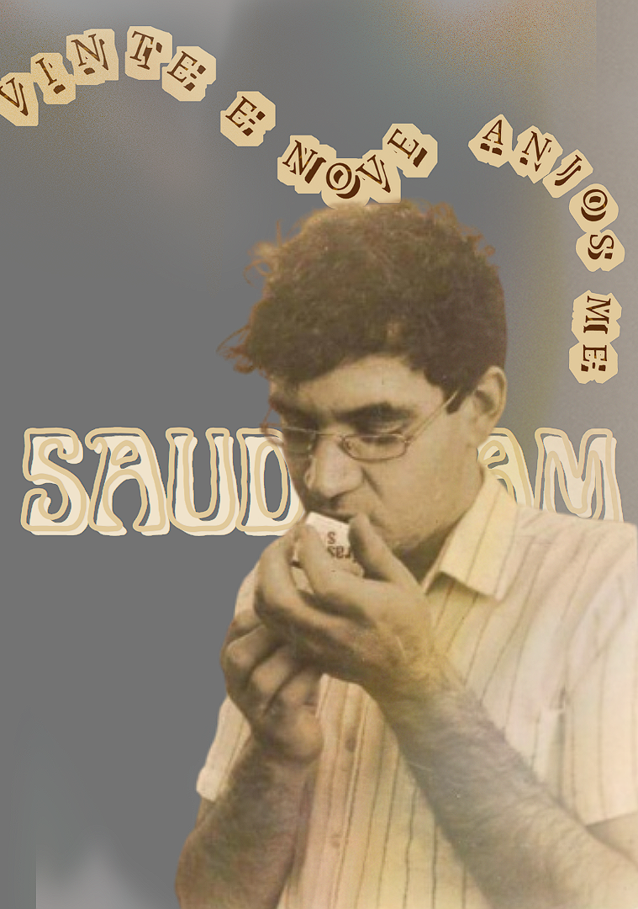
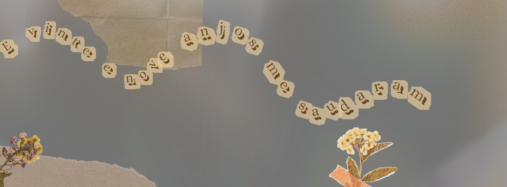

Renato Russo foi um dos maiores nomes da música brasileira, conhecido principalmente como vocalista e compositor da banda Legião Urbana. Nascido no Rio de Janeiro em 27 de março de 1960, ele se mudou ainda jovem para Brasília, cidade onde começou sua carreira musical e que se tornaria um dos centros do rock nacional nos anos 1980. Antes de formar a Legião Urbana, Renato participou da banda punk Aborto Elétrico, que abordava temas políticos e sociais com letras diretas e agressivas.
Em 1982, fundou a Legião Urbana, ao lado de Marcelo Bonfá e, posteriormente, Dado Villa-Lobos. A banda rapidamente ganhou destaque com músicas que refletiam os sentimentos de uma juventude insatisfeita, marcada pela transição do regime militar para a democracia. As composições de Renato uniam poesia, crítica social, filosofia e emoção, tornando-se trilha sonora da vida de muitos brasileiros.
Entre suas músicas mais famosas estão "Tempo Perdido", que fala sobre aproveitar a vida e valorizar o presente; "Pais e Filhos", que trata de conflitos familiares e temas delicados como o suicídio; e "Eduardo e Mônica", uma narrativa romântica sobre um casal improvável. Outras músicas marcantes incluem "Faroeste Caboclo", uma longa história cantada sobre injustiça e violência social; "Que País é Este", uma crítica direta à corrupção e à desigualdade; e "Monte Castelo", que mistura trechos bíblicos e poesia de Camões para refletir sobre o amor e a fé.
Renato Russo era conhecido por sua sensibilidade artística e também por sua vida pessoal intensa. Declaradamente bissexual, enfrentou o preconceito e a solidão, temas que muitas vezes aparecem em suas letras. No início dos anos 1990, revelou-se soropositivo, mas manteve sua condição em segredo do público até sua morte, em 11 de outubro de 1996, aos 36 anos, em decorrência de complicações causadas pela AIDS.
Mesmo após sua morte, Renato Russo continua sendo uma referência na música brasileira. Sua obra permanece viva nas rádios, nas escolas e no coração dos fãs. Suas letras falam de amor, dor, questionamentos e esperanças — temas universais que ainda tocam gerações.